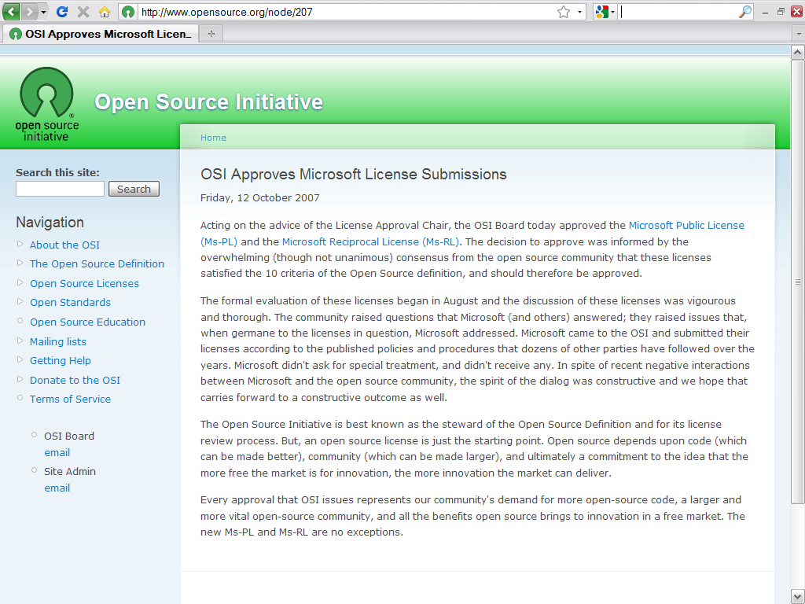

來自封閉陣營的 MS-PL 與 MS-RL


▲ 圖1：OSI 審核通過 MS-PL 與 MS-RL 條款的新聞稿截圖：https://www.opensource.org/node/207，截圖日期 2012-03-29。
【MS-PL 擷取綜合不同自由開源軟體授權條款的特質】
對於筆者來說，MS-PL 跟 Artistic-2.0 一樣（註五），是份內容獨特的授權條款，只不過 Artistic-2.0 的獨特性是在於創造新的授權內容，而 MS-PL 的獨特性是在於擷取其他授權條款的特質放在一起，這些被擷取特質的代表條款包括了 BSD、Apache-2.0 與 GPL 系列條款。
MS-PL 授權使用者可以自由修改、重製與散布該軟體，但是並不強制使用者在散布軟體的時候，必須一併提供程式源碼 (Source Code)，即使是散布衍生程式也是一樣，因此在這一點上，MS-PL 與 BSD 類別的授權態度是一樣的。不過 MS-PL 的規範內容比 BSD 授權條款更為詳盡，包含有定義、授權以及條件與限制三大部份，這部份的規範內容便與 Apahce-2.0 較為相近，包括：兩份條款均有提醒文字，說明專案的商標權並未隨同程式碼一併授權出去，也都有將軟體專案裡，撰寫者自主寫入的專利技術授權出去，讓使用者可以在條款規定的範圍之內，合法地利用這些預先授權的專利技術，最後、如同 Apache-2.0 一樣，MS-PL 也規定有對抗專利侵權主張的反制條款，若是任一 MS-PL 授權專案的使用者乙，對該專案的貢獻者甲提出專利侵權的主張，那麼甲原本透過 MS-PL 對乙提供的所有專利授權將自動終止。因此 MS-PL 在架構上是與 Apache-2.0 比較相近（註六）。
【源碼格式必須沿用 MS-PL 來進行散布、目的碼格式則不受此限制】
然而即使相近，MS-PL 確實有著一些與 BSD、Apache-2.0 完全不同的細部規定。MS-PL 在第 3 條第 (D) 項規定，使用者散布任何一部份 MS-PL 專案程式源碼後，都仍然必須採用 MS-PL 作為散布的授權條款，而若是散布專案的方式為編譯形式或目的碼檔案的話，則不必繼續採用 MS-PL 來授權，但卻也必須選擇與 MS-PL 相容的授權方式才可以。依照這樣的規定，可以知道 MS-PL 有著若干細微且外擴的授權拘束性（註七），其要求使用者散布程式源碼時、無論是原作或是增補修改，依然必須使用 MS-PL 授權條款來進行散布，但與 GPL 系列條款不同的地方在於，GPL 授權條款要求使用者散布專案的目的碼時，一定要同時提供該專案的程式源碼，或是告知後手嗣後取得程式源碼的管道，可是 MS-PL 卻沒有要求使用者散布目的碼格式檔案時，必須要一併擔負提供程式源碼的責任，因此相對於 GPL 授權條款，MS-PL 在授權拘束性上的效力不是沒有，但實際運作上非常微弱。
由以上的說明可以知道，MS-PL 是一份綜合了 BSD、Apache-2.0 與 GPL 授權特質的一份條款，迥異於一般常見的自由開源軟體授權模式，綜合的結果是讓 MS-PL 有著弱化的授權拘束性，形式上、MS-PL 就其程式源碼的型態，依然具有限制後手散布方式的授權拘束特性，但是在實際運作上、只要使用者選擇透過編譯形式或目的碼格式來散布這個軟體專案的話，就可以採用 MS-PL 以外的方式來散布程式碼，此時這個授權方式只要不與 MS-PL 產生衝突即可，因此分析過後、MS-PL 僅具有相當弱化的授權拘束性，因為採用程式源碼方式散布時，增添修改的部份也必須一併使用 MS-PL 來進行釋出。
【MS-RL 在 MS-PL 的基礎上強化授權拘束性】
MS-RL 是 MS-PL 的雙生條款，除了 MS-RL 獨有第 3 條第 (A) 項的規定之外，兩份條款其他部份的內容完全一樣，而第 3 條第 (A) 項的目的就是在強化 MS-RL 的授權拘束性。該條項的規定參照於 MPL-1.1、CDDL-1.0 等授權條款 ，以檔案與檔案 (file) 之間的區隔，作為授權拘束性的判斷標準，所以、如果一個檔案完全沒有包含到 MS-RL 程式碼的話，那麼使用者便可以選擇其他的條款來授權散布這個檔案，然而、若是個別檔案包含有 MS-RL 專案程式碼的話，無論該檔案是以源碼形式或目的碼格式來散布，便都必須要提供後手該檔案的程式源碼，並且限定要以 MS-RL 的授權方式才能接續散布這些檔案。從這個特點來看，MS-RL 與 MPL-1.1、CDDL-1.0 等條款一樣，具有一定外擴強度的授權拘束性，所以使用者利用到 MS-RL 授權程式碼的時候，必須要特別注意這樣的特性，才能夠在散布程式的時候，為個別檔案選擇正確的授權方式。
不過從 OSI 的審核討論串觀察，MS-RL 撰文納入授權拘束性的強化規定時，並沒有細緻地修飾與整合相關內容，因此其並沒有像 MPL-1.1 一般，針對「檔案 (file)」範圍如果界定，有進一步詳細的配套解釋（註八），所以若是完全依照表面文字來解釋 MS-RL 條款內容的話，將 MS-RL 程式碼與其他檔案壓縮成為一個 .zip 檔案，這些同在一個 .zip 檔案中的其他程式碼也因此必須要採用 MS-RL 來授權，這個部份就授權結構推衍的話，是較為不合理也啟人疑惑的。在同一討論串裡，Microsoft 的代表人 Jon Rosenberg 曾就此議題有過簡短的回應，其表示 MS-RL 文字的本意並非如此解釋，不過事後 Microsoft 也並沒有修改相關的內容，而 MS-RL 也就原狀通過 OSI 審查，這樣的規定文字便一直保留到現在的版本中。
【條款規定獨特、利用之際應多加注意】
MS-PL 與 MS-RL 最大的共通優點是內容簡單扼要，這讓使用者可以很快地閱讀完這兩份條款，不過 MS-RL 如上所述，目前在授權拘束性的區隔範圍上，有著文意不清的問題，再加上這兩份條款的授權拘束性運作方式獨特，與一般常見的並不相同，所以在判斷是否與其他授權條款相容的時候，並不容易，必須要視個案狀況而定。由於這些種種的獨特性，因此若是有軟體專案運用到 MS-PL 或 MS-RL 程式碼的話，筆者建議必須多加注意這些程式碼的實際運用方式，以避免違反條款的細部規定，也才能夠進一步降低侵權利用的相關風險。
註一：MS-PL 條款英文原文請見：https://www.opensource.org/licenses/ms-pl；MS-RL 條款英文原文請見：https://www.opensource.org/licenses/ms-rl。
註二：OSI 發布通過這兩份條款的新聞稿：https://www.opensource.org/node/207，最後瀏覽日期 2012-03-29。
註三：雖然 MS-PL 與 MS-RL 均被認定符合四大自由，不過都被 FSF 認定是與 GPL 不相容的授權條款 (GPL-Incompatible Free Software Licenses)，進一步的相關資訊請參見：https://www.gnu.org/licenses/license-list.html#GPLIncompatibleLicenses，最後瀏覽日期 2012-03-29。
註四：互為雙生條款的還有 Open Software License 3.0 (OSL) 與 Academic Free License 3.0 (AFL)，進一步介紹請參見，葛冬梅、邱冠勛，OSL 與 AFL－特質完全相反的雙生條款（上）：https://www.openfoundry.org/en/legal-column-list/498-osl--afl，自由軟體鑄造場電子報，第 62 期；OSL 與 AFL－特質完全相反的雙生條款（下）：https://www.openfoundry.org/en/legal-column-list/497-osl-afl，自由軟體鑄造場電子報，第 63 期。
註五：Artistic-2.0 條款全名為 Artistic License 2.0，英文全文請見：https://www.opensource.org/licenses/artistic-license-2.0；進一步介紹請參見，葛冬梅，獨樹一格的藝術條款－Artistic License 2.0：https://www.openfoundry.org/tw/legal-column-list/8247-artistic-license-20，自由軟體鑄造場電子報，第 166 期。
註六：Apache-2.0 條款全名為 Apache License 2.0，英文全文請見：https://www.apache.org/licenses/LICENSE-2.0；進一步介紹請參見，林懿萱，化簡為繁的 Apache License 2.0：https://www.openfoundry.org/tw/legal-column-list/8581-the-elaborate-license-apache-20，自由軟體鑄造場電子報，第 188 期。
註七：關於自由開源軟體授權條款的授權拘束性分析，進一步介紹請參見，林誠夏，備位啟動的開源專案軟體專利：https://www.openfoundry.org/tw/legal-column-list/8498-standby-software-patent-free-and-open-source，自由軟體鑄造場電子報，第 185 期。
註八：在 OSI 審核討論 MS-RL 的過程中，Lawrence Rosen 曾經點出這個問題，微軟的代表人 Jon Rosenberg 也曾有過簡短的回應，表示 MS-RL 介定檔案界限的範圍，並非直接嚴格照文義解釋。Lawrence Rosen 的提問：https://osdir.com/ml/licenses.open-source.general/2007-08/msg00178.html，最後瀏覽日期 2012-03-29；Jon Rosenberg 的回應：https://osdir.com/ml/licenses.open-source.general/2007-08/msg00193.html，最後瀏覽日期 2012-03-29。此外、由於 MS-RL 在初次送審到 OSI 時，名稱為「Microsoft Community License」，其後才改為現在的名稱，因此上述兩個討論郵件的標題為「RE: For Approval: Microsoft Community License」，而非「RE: For Approval: Microsoft Reciprocal License」。